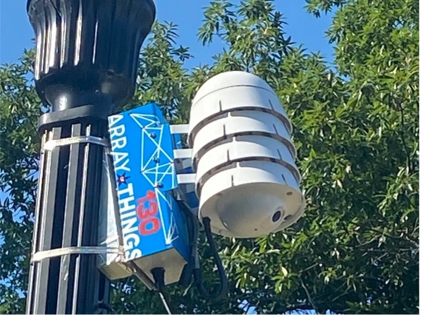
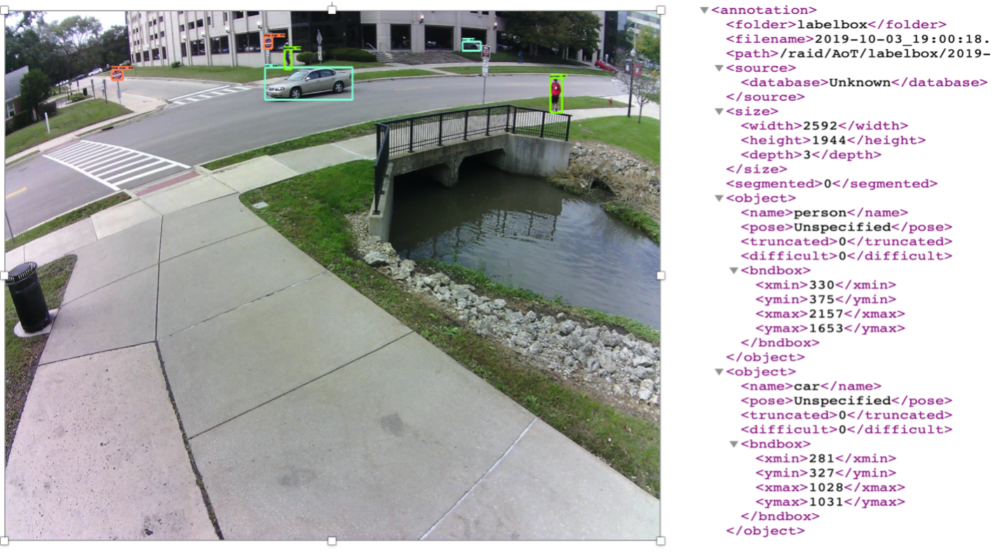
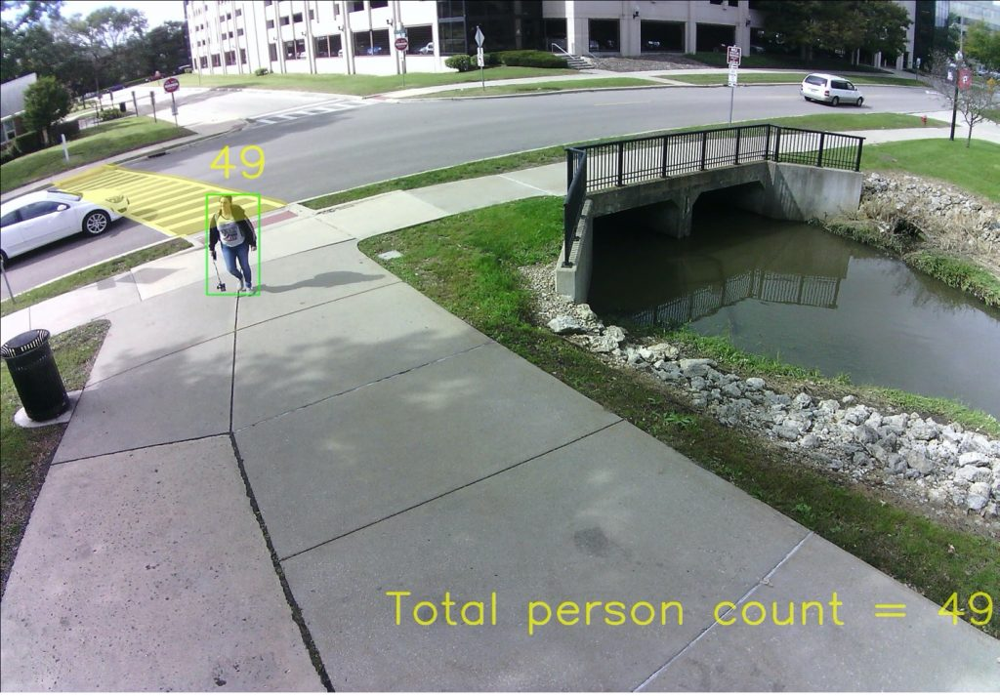
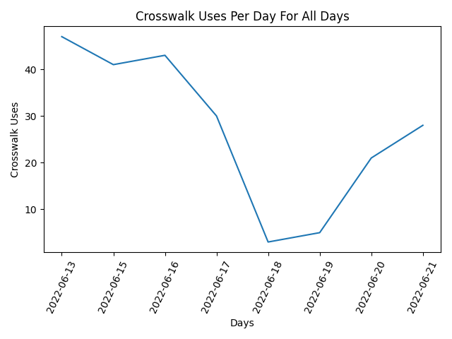

June 25th, 2022
The Crosswalk Detection Sage Project is possible through the use of the Northern Illinois University campus node
that overlooks Normal Road. The camera inside of the node takes snapshots of the surrounding area every second and uploads them, allowing us
to use machine learning to attain in-depth data that can be visualized by using graphs or tracing trajectories using libraries such as OpenCV.

Figure 1: AoT node installed on a light pole at NIU campus
The next step is to detect every pedestrian along with their position in the image.
To do so, one approach could be to train a neural network-based pedestrian detection model that identifies
and locates the pedestrian in the image. However, this process would require a lot of manual image tagging without getting
any new results since several popular pre-trained models are already available that can do a fine job in person detection.
These pre-trained models are trained on a popular COCO dataset [3] which includes more than hundred thousand images.
Model accuracy is an important factor here because if it misses any pedestrian in the image then the final pedestrian counting cannot be accurate.
The collected images are then input to the model, 'centernet_hg104_1024x1024_coco17_tpu-32'.
Using the Tensorflow object detection model we are able to create XML files. XML stores each detected objects' name and their box coordinates.

Figure 2: Output image and XML generated from NasNet object detection model. Detected objects are boxed in the image.
Once each pedestrian's position is stored in the XML, the next part is to identify them in successive images to avoid their recounting.
In computer vision community, this task is called pedestrian re-identification (ReID) [7].
The idea behind ReID is to find a metrics or representation of a pedestrian in the image that is invariant of different angles, distance, zoom level, etc.
Neural networks-based models try to learn local regions (shoes, glasses, hair color, etc.)
as well as global full body region (t-shirt and shorts color, design, etc.) features to discriminate the one pedestrian from others.
At the end of training, these models aim to generate invariant multi-dimensional features of a pedestrian from different angles, distance, clothes, etc.
In this study, we have leveraged a deep learning-based model deep-person-reid [7,8] to generate such features of each pedestrian detected in the frame to compare
with the pedestrians from the following frames for re-identification. The model generates 1024-dimensional features for each pedestrian cropped in a rectangular box.
The cosine similarity is calculated for feature vectors of one frame against successive frames.
Pedestrians are considered same if they have high
cosine score, hence, assigned the same pedestrian id. In other cases where cosine similarity is below a pre-defined threshold, both pedestrians
are assigned different ids. Low matching score may also happen where pedestrian is partially occluded by a car or another pedestrian in next frame,
the similarity score gets very low. To mitigate this issue, the algorithm compared the current frame against last 6 consecutive frames to avoid
assigning new id to same pedestrian. Another challenge we faced with the threshold-based matching is when one pedestrian had high similarity scores
against multiple pedestrians. To fix this issue, we employed the greedy method in which it ranks each pair according to their similarity score.
Based on their ranking, the algorithm picks the top pair and assigns same id to both pedestrians, and subsequently removes other pairs where
any one of the pedestrians from the top pair is present. By employing these techniques, we were able to assign a unique id to a distinct pedestrian.
Now that a unique id is assigned to each distinct pedestrian (barring any errors),
the next step in the pipeline is to count the number of pedestrians who have used (and not used) the crosswalk
while crossing the street and storing the coordinates in a database.
The output of this step will be two metrics for any given time period. First, the number of
pedestrians who crossed the street, and second, the number of pedestrians who followed the crosswalk. Each pedestrian counted will have their own list
of coordinates that will be used within visual analytics.
Subtracting the 2nd metric from 1st one will give the count of crosswalk violations. To compute these metrices,
it is important to locate the street and crosswalk in the image. Fortunately, in this case, the camera is installed
on a fixed lightpole which didn't shake or vibrate significantly due to wind or heavy vehicles.
Taking advantage of it, we pre-set the location of the crosswalk and street in the image.
While the crosswalk is represented in a form of convex polygon,
both sides of the street are depicted by two parallel straight lines.
These representations helped to determine the location of any pedestrian with respect to the crosswalk and the street.
To recall, a pedestrian's location in the image is stored as the four coordinates of the bounding rectangular box.
In a 2D image, it is essential to measure each pedestrian's location by a single (x,y)
coordinate to make a concrete decision about their position with reference to the crosswalk and street.
If we observe Figure 3 below, the lady is walking on the pavement towards the computer science building,
but her head and center of body are still in the street (due to 2D image display) while her legs are on the pavement.
Similar observations in multiple images led us to use the median between the bottom two corners so that the feet are now the single identifying coordinate.

Figure 3: Our algorithm detects that the lady has crossed the street
Now that a pedestrian's position has been established, we will briefly discuss about the simple rules to determine if a pedestrian has crossed the street and if they have used the crosswalk or not. A pedestrian is considered to have crossed the street if they are detected on both sides of the street within a fixed time. To recall, the street has been represented by two straight lines, one for each side. The sign of these straight lines against the pedestrian's coordinates exhibits their position relative to the street. For example, as we see in Figure 4 below, points A and B are in opposite sides of the straight line which can be verified by putting the value of these points coordinates in the line equation. While the value for point A is -2, for point B it is +3. Opposite signs of both points resemble that they are in opposite sides of the straight line. By similar means, we can compute if the pedestrian has been present to both sides of the street which will confirm that the pedestrian has crossed it. Additionally, to determine if the pedestrian has used the crosswalk, we can similarly verify their positions in the middle of the street. If several of their detected positions are inside the crosswalk polygon, we consider that the pedestrian has used the crosswalk. Using these two metrics, the count for crosswalk usage can be easily computed.Figure 4: Determining the position of the points with respect to the straight line
Now that we know how the crosswalk usage is determined, and we have the coordinates of those who come in contact or go near the crosswalk, we are able
display the data on graphs and images. With the use of OpenCV, and its polylines functions, we can directly input the list of a pedestrian's coordinates
into those functions and trace lines of where the pedestrian has walked. Along with OpenCV tracing the trajectories, we use Matplotlib and Pyplot to create
unique graphs that display overall trends of crosswalk detections, as well as day specific statistics on crosswalk usage. Observing Figure 5 below, we can come
to the conclusion that the crosswalk usage has drastically different statistics depending on what day of the week it is.
The use of this allows us to more easily think about and picture the trends of different analyical views such as if weather is directly correlated to crosswalk usage or not.

Figure 5: Line graph depicting the peaks and dips of crosswalk usage over a range of 8 days
Hi, I am Pratool Bharti, an assistant professor in Computer Science department at Northern Illinois University (NIU). Before joining NIU, I worked for 2 years in a Florida based startup as a research and development manager. There, my role was to design and build computer vision and machine learning based yard management system that automatically tracks the vehicles inside a freight yard. At NIU, I am deeply interested in solving complex real-life problems by employing computer science tools and techniques, especially artificial intelligence and computer vision. While working at Argonne National Lab in summer 2020, I worked on to design and build an AI-enabled computer vision system that counts the pedestrians who violate the crosswalk while crossing the street.
Hello, I'm Wesley Kwiecinski, an undergraduate student at Northern Illinois University. I am majoring in Computer Science with an emphasis in software engineering, and minoring in general mathematics. I transferred to NIU after attending the College of Lake County. In the fall semester of 2021, I joined the ddilab along with Justin to assist in adapting and updating Dr. Bharti's crosswalk and pedestrian detection code to work with a new camera. I worked with Justin to help store the resulting data from the scripts and visualizing the data on this website.
Hello, I am Justin Derus, an undergraduate student at Northern Illinois University majoring in Computer Science with an emphasis on software development. Before transferring to NIU I attained my Associates degree at Elgin Community College. In the Fall of 2021 I joined the team and began to adapt Dr. Bharti's AI crosswalk detection code to work with the new camera as well as automating the process and working to display visual analytics.